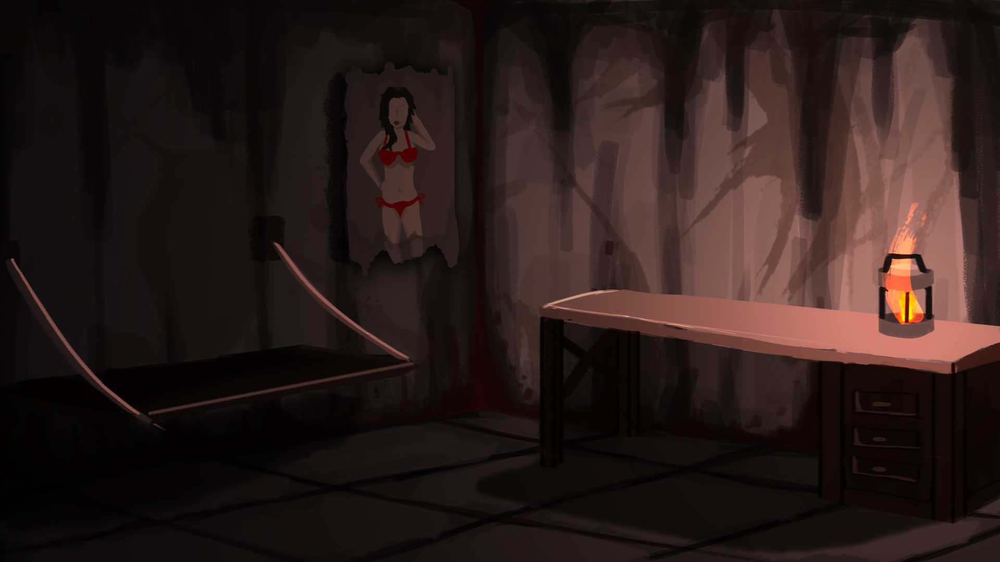
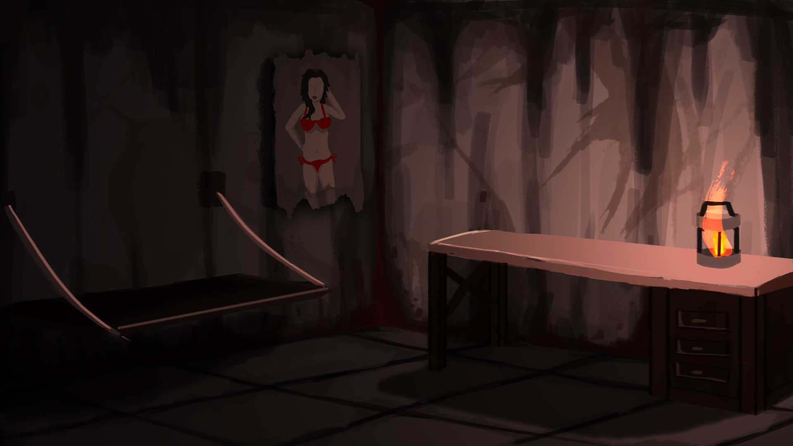
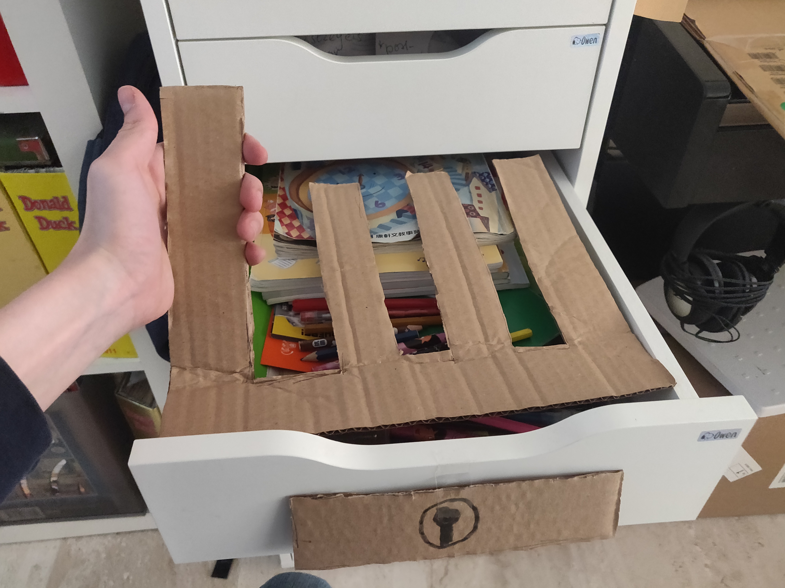
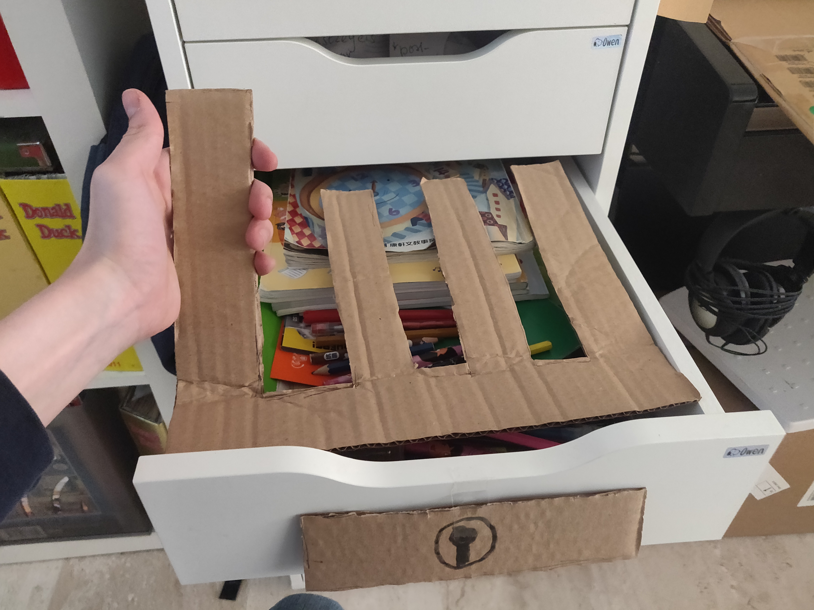
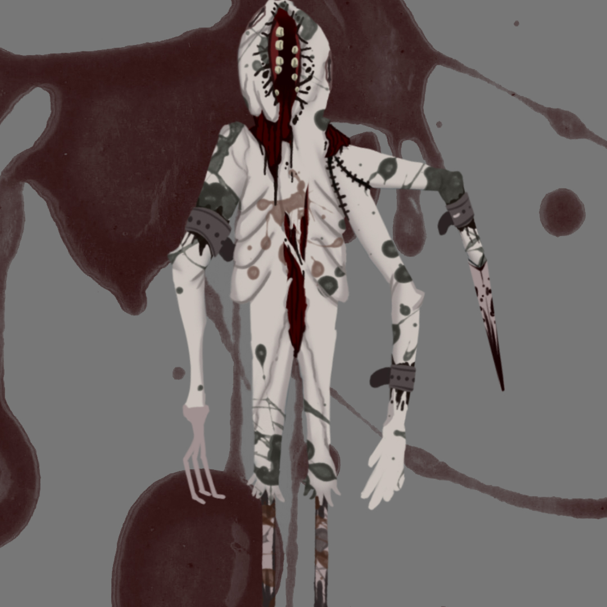
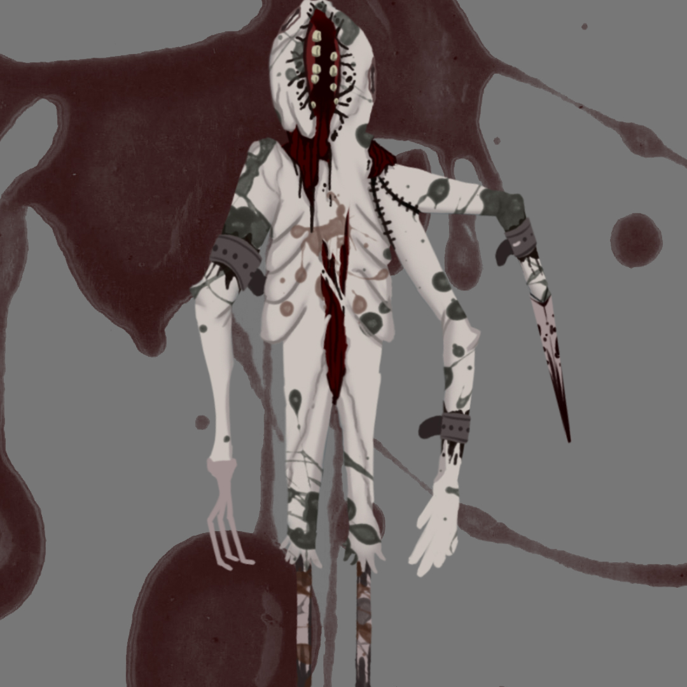

Tarnished is een VR horror escape room game die ik samen met Swen Rooijakkers heb gemaakt. Je speelt als een Russische gevangene die in een verlaten cel is achter gelaten. Probeer te ontsnappen door de puzzel op te lossen in je kamer. Maar pas op, het is donker en je hebt maar 1 lantaren om dingen op te lichten. Ook ben je niet alleen in de gevangenis...
In dit project heb ik de game design gedaan. Ik designde de puzzels, het level en het concept. Swen heeft de 3D modellen gemaakt en de concept art getekend. Dit project heb ik in Unity gemaakt met behulp van de SteamVR SDK. Het is geprogrammeerd met Unity C#.
 

 

 
